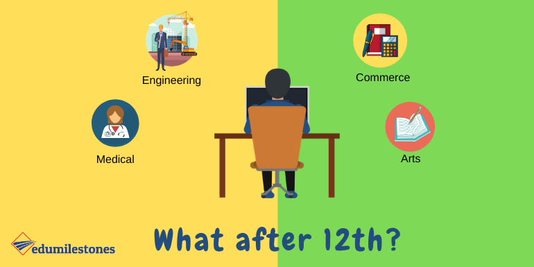

Career Guidance for 10th and 12th Standard Students.
Choosing a career after 10th or 12th standard is a big decision. It is important to choose a career that you are
interested in and that you are good at. There are many factors to consider when choosing a career, such as your
academic performance, your interests, your skills, and your financial situation.
Karnataka is a state with a diverse economy, so there are many different career options available to students.
Some of the most popular career options in Karnataka include:
When choosing a career, it is important to consider the current job market. Some industries are growing faster
than others, and some jobs are in higher demand than others. It is also important to consider your own interests
and skills. What are you passionate about? What are you good at?
Here is some guidance for 10th and 12th standard students in Karnataka:
-
Explore your options.There are many different career options available, so it is important to
take some time to explore them. Talk to your parents, teachers, and career counselors. Read books and articles
about different careers. Visit colleges and universities to learn more about their programs.
-
Consider your interests and skills. What are you passionate about? What are you good at? When
choosing a career, it is important to choose something that you are interested in and that you are good at.
This will make you more likely to succeed and be happy in your career.
-
Research the job market.
What are the job prospects in different industries? What jobs are in high demand? It is important to
research the job market before choosing a career. This will help you to choose a career that has good job
prospects.
-
Talk to people in your chosen field
. Talk to people who are working in the field that you are interested in. They can tell you about their work,
the challenges and rewards of the job, and the education and training that you need.
-
Get involved in extracurricular activities.
Extracurricular activities can help you to develop your skills and interests. They can also help you to
network with people in your chosen field.
Here are some additional tips for students in Karnataka:
- Consider your financial situation. Some careers require more education and training than
others, and some
careers pay more than others. It is important to consider your financial situation when choosing a career.
-
Be flexible. The job market is constantly changing, so it is important to be flexible. Be
open to different
career options and be willing to relocate if necessary.
-
Don't be afraid to change your mind.It is perfectly normal to change your mind about your
career choice. If
you realize that you are not happy in your chosen career, it is not too late to change.
If you are a student in Karnataka and you are not sure what career to choose, there are many resources available
to help you. You can talk to your parents, teachers, and career counselors. You can also read books and articles
about different careers. Visit colleges and universities to learn more about their programs. And you can talk to
people who are working in the field that you are interested in.
Choosing a career is a big decision, but it is also an exciting one. By taking the time to explore your options,
consider your interests and skills, and research the job market, you can choose a career that is right for you.
What after 10th ?
After 10th in Karnataka, students can pursue Pre-University Course (PUC) for 2 years before moving on to
undergraduate studies. PUC is divided into three streams:
Science, Commerce, and Arts.
Science
Science stream is for students who are interested in pursuing a career in engineering, medicine, or pure
sciences.
Popular subject combinations in the science stream include:
-
Physics, Chemistry, Mathematics, Biology (PCMB)
-
Physics, Chemistry, Mathematics, Computer Science (PCMC)
-
Physics, Chemistry, Mathematics, Electronics (PCME)
Commerce
Commerce stream is for students who are interested in pursuing a career in business, accounting, finance, or
management. Popular subject combinations in the commerce stream include:
-
Accountancy, Business Studies, Economics, Mathematics (ABEM)
-
Accountancy, Business Studies, Economics, Statistics (ABES)
-
Accountancy, Business Studies, Economics, Computer Science (ABEC)
-
Accountancy, Business Studies, Statistics, Computer Science (ABSC)
Arts
Arts stream is for students who are interested in pursuing a career in the humanities, social sciences, or fine
arts. Popular subject combinations in the arts stream include:
-
History, Economics, Sociology, Psychology (HESP)
-
History, Economics, Political Science, Sociology (HEPS)
-
History, Economics, Business Studies, Accountancy (HEBA)
-
Computer Science, Economics, Business Studies, Accountancy (CEBA)
-
Basic Maths, Economics, Business Studies, Accountancy (MEBA)
-
Statistics, Economics, Business Studies, Accountancy (SEBA)
Students can choose the stream and subject combination that best suits their interests and career goals. It is
important to note that some subject combinations are required for certain undergraduate programs. For example,
students who want to study medicine need to have PCMB in PUC.
When choosing a PUC stream and subject combination, it is important to consider the following factors:
Academic performance:
Students should choose a stream and subject combination that they are good at and that
they are likely to succeed in.
-
Interests : students should choose a stream and subject combination that they are interested in. This will
make them more likely to be successful and happy in their studies.
-
Career goals: Students should choose a stream and subject combination that will prepare them for their
desired career.
Students can get help choosing a PUC stream and subject combination from their parents, teachers, and career
counselors.
What after 12th ?

After completing PUC, students can choose from a variety of bachelor's degree programs. The best bachelor's degree program for a student will depend on their interests, skills, and career goals.
Here is some guidance for students in Karnataka who are choosing a bachelor's degree program:
-
Consider your interests and skills.What are you passionate about? What are you good at? When choosing a bachelor's degree program, it is important to choose something that you are interested in and that you are good at. This will make you more likely to succeed and be happy in your studies.
-
Research different bachelor's degree programs. are many different bachelor's degree programs available, so it is important to take some time to research them. Talk to your parents, teachers, and career counselors. Read books and articles about different bachelor's degree programs. Visit colleges and universities to learn more about their programs.
-
Consider your career goals. What do you want to do after you graduate? Some bachelor's degree programs will prepare you for specific careers, while others will give you a more general education. It is important to consider your career goals when choosing a bachelor's degree program.
Here are some specific bachelor's degree programs that are popular in Karnataka:
-
Engineering: Bachelor of Engineering (BE), Bachelor of Technology (BTech)
-
Medicine: MBBS, BDS
-
Management:Bachelor of Business Administration (BBA), Bachelor of Commerce (BCom)
-
Law: Bachelor of Laws (LLB)
-
Teaching: Bachelor of Education (BEd)
-
Accounting and finance: Bachelor of Commerce (BCom) with specialization in Accounting and Finance
-
Arts and humanities:Bachelor of Arts (BA) with specialization in a subject such as English, History, Political Science, Economics, or Sociology
-
Agriculture: Bachelor of Science (BSc) in Agriculture
-
Tourism and hospitality:Bachelor of Hotel Management (BHM), Bachelor of Tourism Management (BTM)
-
Creative industries :Bachelor of Fine Arts (BFA), Bachelor of Design (BDes)
-
Entrepreneurship: Bachelor of Business Administration (BBA) with specialization in Entrepreneurship
Students can also choose to pursue a bachelor's degree program outside of Karnataka. There are many excellent colleges and universities all over India and the world.
When choosing a bachelor's degree program, it is important to consider the following factors:
-
Cost: The cost of a bachelor's degree program can vary depending on the institution and the program. It is important to choose a program that is affordable for you and your family.
-
Admission requirements: Each bachelor's degree program has its own admission requirements. It is important to check the admission requirements for the programs that you are interested in.
-
Job prospects: Some bachelor's degree programs have better job prospects than others. It is important to research the job prospects for the programs that you are interested in.
Students can get help choosing a bachelor's degree program from their parents, teachers, and career counselors. They can also visit the websites of colleges and universities to learn more about their programs.